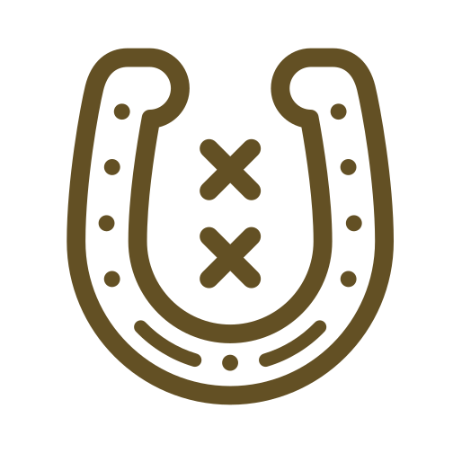

Howdy, my name is Andres Hermosilla & I'm a bootstrappin', keyboard-slinging, code-whisperer chock-full of experience from my time out on the range! From handling client communications, to designing, to engineering thing-a-ma-jigs, I've become pretty comfortable in the saddle, herding code with my keyboard. All of this allows me to see the whole kaboodle when it comes to projects - helping them come out cleaner than my spit-shine boots! My boots, by the way, never seem to stay clean, because I can't but help trying to wrangle something up new! I'm also keen on keeping bandits out and data in, what use is a stable if you can't keep the horses in?
Enough of my ramblin', let's git to some bullet points!
Strong sense of design
I do more than wear a fancy hat, I've also won awards for making designs that could make cows sing!
Can-do-positive-attitude
Started my first business helping people tame their computers when I was just a young buckaroo (18)!

Insatiable curiosity
Ever since I was young enough to hog-tie a billy goat I've been dismantling computers and just about anything else I could get my hands on.
Intuitive Sense of direction
Go West! Most projects I've take on are with scrubby specs but we always end up at the right place!
Pursuits
Keeping bandits out and data in! (VaultPress, JetPack, Akismet, Devops)
Working on infrastructure and automation, gotta keep those wheels turning!
Anything to make WordPress a heap more awesome!
Ranches
Software Engineer
Barracuda Networks Feb 2013 - Present
Aimed to herd code in with testing principles!
Rode with security team & learned importance of web app security & keeping bandits out and horses in
Learned about taming systems and keeping them steady
Worked the full stack (devops -> front-end) with web services & integrations for all the teams!
$all_skills_2x
Developer / Designer
Freelance Jan 2008 - Present
Hired hand helping out on small (local) to large ranches (PG&E)!
Was the begining of my WordPress journey!
$all_skills
Developer / Designer
JP Marketing Oct 2011 - Feb 2013
Lassoed in my collaboration skills
Reined in my code into tame critters
Pulled the trigger & started reading WordPress source
Took designs and galloped to end products using PHP/WordPress
PHP / CSS / JavaScript / Backbone / WordPress
Front End Engineer
Solutions by Design Jul 2010 - Sept 2011
Barreled through a whole herd of PSD to HTML projects to earn my stripes!
My wagon-wheels started turning on leveraging programming to make life easier!
Jumped to new heights, learned the in & outs of jQuery/CSS
PHP / CSS / jQuery / WordPress
Developer / Designer
Fresno StateOct 2008 - Jul 2010
Learned from an Ace-high sheriff who modeled proper manners with customers
Gathered up departments websites and mopped them up nice and dandy!
CSS / WordPress
Skills
Backend
I've tamed all sorts of creatures into gentle beings! Love this stuff!